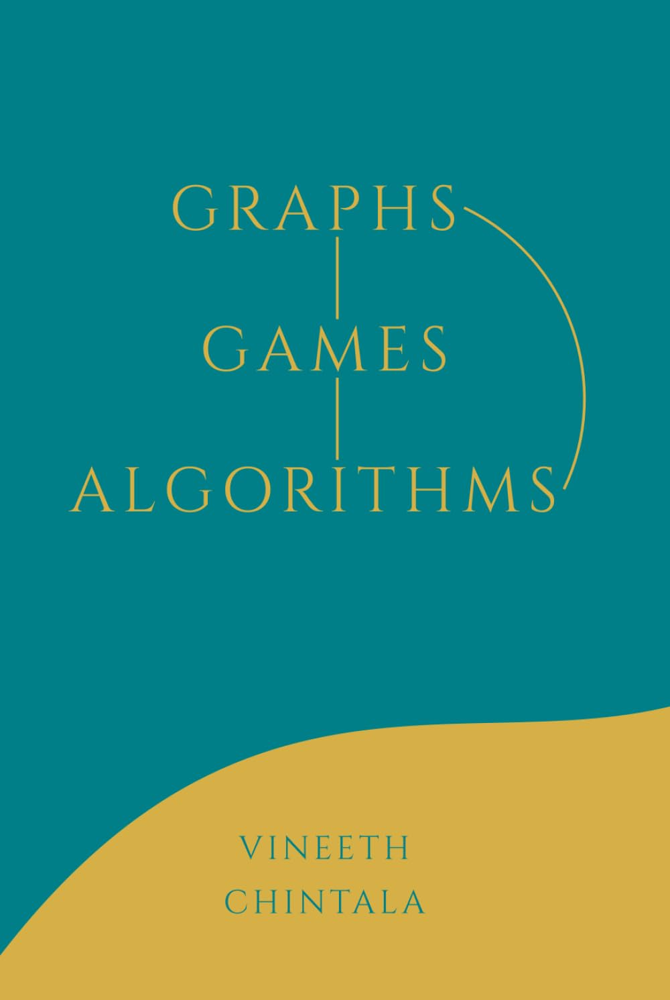

Graphs, Games, Algorithms
A short fun introduction to graphs and algorithms (based on my undergraduate courses)
Free eBook
•
Amazon (US)
I'm Vineeth, a writer and a mathematician. Every few years, I try to explore a new field in depth. From
2016-2019, I worked in Game theory and Behavioural Economics.
Prior to that, I did a PhD in Mathematics. I also spent a year as a Fulbright Scholar in 2021-22.
At the end of 2025, I quit academia and have
been exploring AI, talking to experts and hosting workshops for companies, etc.
I love the energy that comes with collaborating with great teams, so feel free to reach out:
vineethchintala (at gmail).
PhD Poem
Over five long years of PhD
Adding tardy reading and youthful spree, my life has progressed
close to Mumbai's sea
Tuned to lazy boring (or playful glee), I was possessed
first by rings, groups and Suslin's theorem
then by Musil, Proust's and Pushkin's rhythm
all the words that made me wiser
for all the work, I thank my advisor
and wish him well as I close this door
Adios! Food and summer, I won't miss I'm sure;
But friends I'll remember - the fun, the obscure,
the plain - even the ones who keep a score...
Goodbye to you too, dear reader, until we meet again
perhaps what was lived was not in vain...
(Written for my PhD thesis acknowledgements.)